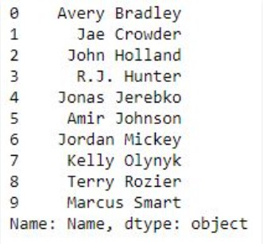
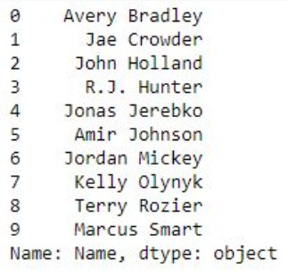
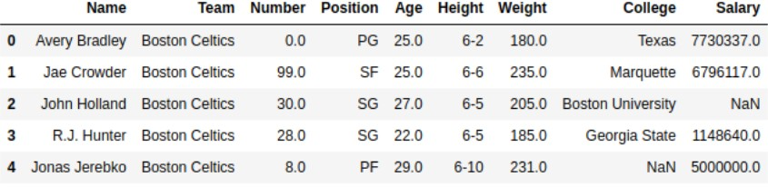

Introduction to Pandas
Pandas is an open-source library that is made mainly for working with relational or labeled data both easily and intuitively. It provides various data structures and operations for manipulating numerical data and time series. This
library is built on the top of the NumPy library. Pandas is fast and it has high-performance & productivity for users. Python with Pandas is used in a wide range of fields including academic and commercial domains including
finance, economics, Statistics, analytics, etc.
Key Features of Pandas
- Fast and efficient DataFrame object with default and customized indexing.
- Tools for loading data into in-memory data objects from different file formats.
- Data alignment and integrated handling of missing data.
- Data alignment and integrated handling of missing data.
- Label-based slicing, indexing and subsetting of large data sets.
- Columns from a data structure can be deleted or inserted.
- Group by data for aggregation and transformations.
- High performance merging and joining of data.
- Time Series functionality.
How to Install Python Pandas on Windows and Linux?
Pandas programs can be written on any plain text editor like notepad, notepad++, or anything of that sort and saved with a .py extension. To begin with, writing Pandas Codes and performing various intriguing and useful operations,
one must have Python installed on their System. This can be done by following the step by step instructions provided below:
What if Python already exists? Let’s check
To check if your device is pre-installed with Python or not, just go to the Command line. Now run the following command:
python --version
If Python is already installed, it will generate a message with the Python version available.
To install Python, please visit: How to Install Python on Windows or Linux
Downloading & Installing Pandas
Pandas can be installed in multiple ways on Windows and on Linux. Various different ways are listed below:
Windows Python Pandas can be installed on Windows in two ways:
* Using Pip
* Using Anaconda
Install Pandas using pip
PIP
is a package management system used to install and manage software packages/libraries written in Python. These files are stored in a large “on-line repository” termed as Python Package Index (PyPI). Pandas can be installed
using PIP by the use of the following command:
pip install pandas
Install Pandas using Anaconda
Anaconda is open-source software that contains Jupyter, spyder, etc that are used for large data processing, data analytics, heavy scientific computing. If your system is not pre-equipped with Anaconda Navigator, you can learn how to install Anaconda Navigator on Windows or Linux
Steps to Install Pandas using Anaconda Navigator:
Step 1: Search
for Anaconda Navigator in Start Menu and open it.
Step 2: Click on the Environment tab and then click on the create button
to create a new Pandas Environment.
Step 3: Give a name to your Environment, e.g. Pandas and then choose a python version to run in the environment. Now click on the Create button
to create Pandas Environment.
Step 4: Now click on the Pandas Environment created to activate it.
Step 5: In the list above package names, select All to
filter all the packages.
Step 6: Now in the Search Bar, look for ‘Pandas‘. Select the Pandas package for Installation.
Step 7: Now
Right Click on the checkbox given before the name of the package and then go to ‘Mark for specific version installation‘. Now select the version that you want to install.
Step 8: Click
on the Apply button to install the Pandas Package.
Step 9: Finish the Installation process by clicking on the Apply button.
Step 10: Now
to open the Pandas Environment, click on the Green Arrow on the right of package name and select the Console with which you want to begin your Pandas programming.
Linux
To
install Pandas on Linux, just type the following command in the Terminal Window and press Enter. Linux will automatically download and install the packages and files required to run Pandas Environment in Python:
Pandas DataFrame
Pandas DataFrame is two-dimensional size-mutable, potentially heterogeneous tabular data structure with labeled axes (rows and columns). A Data frame is a two-dimensional data structure, i.e., data is aligned in a tabular
fashion in rows and columns. Pandas DataFrame consists of three principal components, the data, rows, and columns.

We will get a brief insight on all these basic operation which can be performed on Pandas DataFrame:
- Creating a DataFrame
- Dealing with Rows and Columns
- Indexing and Selecting Data
- Working with Missing Data
- Iterating over rows and columns
Creating a Pandas DataFrame
In the real world, a Pandas DataFrame will be created by loading the datasets from existing storage, storage can be SQL Database, CSV file, and Excel file. Pandas DataFrame can be created from the lists, dictionary, and
from a list of dictionary etc. Dataframe can be created in different ways here are some ways by which we create a dataframe:
Creating a dataframe using List: DataFrame can be created using a
single list or a list of lists.
# import pandas as pd
import pandas as pd
# list of strings
lst = ['Geeks', 'For', 'Geeks', 'is', 'portal', 'for', 'Geeks']
# Calling DataFrame constructor on list
df = pd.DataFrame(lst)
print(df)
Output:
Creating DataFrame from dict of narray/lists: To create DataFrame from dict of narray/list, all the narray must be of same length. If index is passed then the length index should be equal to the length
of arrays. If no index is passed, then by default, index will be range(n) where n is the array length.
# Python code demonstrate creating
# DataFrame from dict narray / lists
# By default addresses.
import pandas as pd
# intialise data of lists.
data = {'Name':['Tom', 'nick', 'krish', 'jack'], 'Age':[20, 21, 19, 18]}
# Create DataFrame
df = pd.DataFrame(data)
# Print the output.
print(df)
Output:

Dealing with Rows and Columns
A Data frame is a two-dimensional data structure, i.e., data is aligned in a tabular fashion in rows and columns. We can perform basic operations on rows/columns like selecting, deleting, adding, and renaming.
Column Selection: In
Order to select a column in Pandas DataFrame, we can either access the columns by calling them by their columns name.
# Import pandas package
import pandas as pd
# Define a dictionary containing employee data
data = {'Name':['Jai', 'Princi', 'Gaurav', 'Anuj'], 'Age':[27, 24, 22, 32], 'Address':['Delhi', 'Kanpur', 'Allahabad', 'Kannauj'],
'Qualification':['Msc', 'MA', 'MCA', 'Phd']}
# Convert the dictionary into DataFrame
df = pd.DataFrame(data)
# select two columns
print(df[['Name', 'Qualification']])
Output:

Row Selection: Pandas provide a unique method to retrieve rows from a Data frame. DataFrame.loc[] method is used to retrieve rows from Pandas DataFrame. Rows can also be selected by passing integer
location to an iloc[] function.
# importing pandas package
import pandas as pd
# making data frame from csv file
data = pd.read_csv("nba.csv", index_col ="Name")
# retrieving row by loc method
first = data.loc["Avery Bradley"]
second = data.loc["R.J. Hunter"]
print(first, "\n\n\n", second)
Output:

Indexing and Selecting Data
Indexing in pandas means simply selecting particular rows and columns of data from a DataFrame. Indexing could mean selecting all the rows and some of the columns, some of the rows and all of the columns, or some of each
of the rows and columns. Indexing can also be known as Subset Selection.
Indexing a Dataframe using indexing operator [] :
Indexing operator is used to refer to the square brackets following an
object. The .loc and .iloc indexers also use the indexing operator to make selections. In this indexing operator to refer to df[].
Selecting a single columns: In order to select a single column,
we simply put the name of the column in-between the brackets
# importing pandas package
import pandas as pd
# making data frame from csv file
data = pd.read_csv("nba.csv", index_col ="Name")
# retrieving columns by indexing operator
first = data["Age"]
print(first)
Output:

Indexing a DataFrame using .loc[ ] :
This function selects data by the label of the rows and columns. The df.loc indexer selects data in a different way than just the indexing operator. It can select
subsets of rows or columns. It can also simultaneously select subsets of rows and columns.
Selecting a single row: In order to select a single row using .loc[], we put a single row label in
a .loc function.
# importing pandas package
import pandas as pd
# making data frame from csv file
data = pd.read_csv("nba.csv", index_col ="Name")
# retrieving row by loc method
first = data.loc["Avery Bradley"]
second = data.loc["R.J. Hunter"]
print(first, "\n\n\n", second)
Output
As shown in the output image, two series were returned since there was only one parameter both of the times.
Indexing a DataFrame using .iloc[ ] :
This function allows us to retrieve rows and columns by position. In order to do that, we’ll need to specify the positions of the rows that we want, and the positions
of the columns that we want as well. The df.iloc indexer is very similar to df.loc but only uses integer locations to make its selections.
Selecting a single row: In order to select a single
row using .iloc[], we can pass a single integer to .iloc[] function.
import pandas as pd
# making data frame from csv file
data = pd.read_csv("nba.csv", index_col ="Name")
# retrieving rows by iloc method
row2 = data.iloc[3]
print(row2)
Output:
Working with Missing Data
Missing Data can occur when no information is provided for one or more items or for a whole unit. Missing Data is a very big problem in real life scenario. Missing Data can also refer to as NA(Not Available) values in pandas.
Checking for missing values using isnull() and notnull() : In
order to check missing values in Pandas DataFrame, we use a function isnull() and notnull(). Both function help in checking whether a value is NaN or not. These function can also be used in Pandas Series in order to find
null values in a series.
# importing pandas as pd
import pandas as pd
# importing numpy as np
import numpy as np
# dictionary of lists
dict = {'First Score':[100, 90, np.nan, 95], 'Second Score': [30, 45, 56, np.nan], 'Third Score':[np.nan, 40, 80, 98]}
# creating a dataframe from list
df = pd.DataFrame(dict)
# using isnull() function
df.isnull()
Output:

Filling missing values using fillna(), replace() and interpolate() : In order to fill null values in a datasets, we use fillna(), replace() and interpolate() function these function replace NaN values
with some value of their own. All these function help in filling a null values in datasets of a DataFrame. Interpolate() function is basically used to fill NA values in the dataframe but it uses various interpolation technique
to fill the missing values rather than hard-coding the value.
# importing pandas as pd
import pandas as pd
# importing numpy as np
import numpy as np
# dictionary of lists
dict = {'First Score':[100, 90, np.nan, 95], 'Second Score': [30, 45, 56, np.nan], 'Third Score':[np.nan, 40, 80, 98]}
# creating a dataframe from dictionary
df = pd.DataFrame(dict)
# filling missing value using fillna()
df.fillna(0)
Output:

Dropping missing values using dropna() : In order to drop a null values from a dataframe, we used dropna() function this fuction drop Rows/Columns of datasets with Null values in different ways.
# importing pandas as pd
import pandas as pd
# importing numpy as np
import numpy as np
# dictionary of lists
dict = {'First Score':[100, 90, np.nan, 95], 'Second Score': [30, np.nan, 45, 56], 'Third Score':[52, 40, 80, 98], 'Fourth Score':[np.nan, np.nan, np.nan, 65]}
# creating a dataframe from dictionary
df = pd.DataFrame(dict)
# using dropna() function
df
Output:

Iterating over rows and columns
Iteration is a general term for taking each item of something, one after another. Pandas DataFrame consists of rows and columns so, in order to iterate over dataframe, we have to iterate a dataframe like a dictionary.
Iterating over rows : In
order to iterate over rows, we can use three function iteritems(), iterrows(), itertuples() . These three function will help in iteration over rows.
# importing pandas as pd
import pandas as pd
# dictionary of lists
dict = {'name':["aparna", "pankaj", "sudhir", "Geeku"], 'degree': ["MBA", "BCA", "M.Tech", "MBA"], 'score':[90, 40, 80, 98]}
# creating a dataframe from a dictionary
df = pd.DataFrame(dict)
print(df)
Output:

Iterating over Columns : In order to iterate over columns, we need to create a list of dataframe columns and then iterating through that list to pull out the dataframe columns.
# importing pandas as pd
import pandas as pd
# dictionary of lists
dict = {'name':["aparna", "pankaj", "sudhir", "Geeku"], 'degree': ["MBA", "BCA", "M.Tech", "MBA"], 'score':[90, 40, 80, 98]}
# creating a dataframe from a dictionary
df = pd.DataFrame(dict)
print(df)
Output:
Pandas Series
Pandas Series is a one-dimensional labeled array capable of holding data of any type (integer, string, float, python objects). The axis labels are collectively called index. Pandas Series is nothing but a column in an excel
sheet. Labels need not be unique but must be a hashable type. The object supports both integer and label-based indexing and provides a host of methods for performing operations involving the index.
We will get a brief insight on all these basic operations which can be performed on Pandas Series :
- Creating a Series
- Accessing element of Series
- Indexing and Selecting Data in Series
- Binary operation on Series
- Conversion Operation on Series
Creating Panda Series
In the real world, a Pandas Series will be created by loading the datasets from existing storage, storage can be SQL Database, CSV file, and Excel file. Pandas Series can be created from the lists, dictionary, and from
a scalar value etc. Series can be created in different ways, here are some ways by which we create a series:
Creating a series from array: In order to create a series from array, we have to
import a numpy module and have to use array() function.
# import pandas as pd
import pandas as pd
# import numpy as np
import numpy as np
# simple array
data = np.array(['g','e','e','k','s'])
ser = pd.Series(data)
print(ser)
Output:

Creating a series from Lists: In order to create a series from list, we have to first create a list after that we can create a series from list.
import pandas as pd
# a simple list
list = ['g', 'e', 'e', 'k', 's']
# create series form a list
ser = pd.Series(list)
print(ser)
Output:

Accessing element of Series
There are two ways through which we can access element of series, they are:
- Accessing Element from Series with Position
- Accessing Element Using Label (index)
Accessing Element from Series with Position : In order to access the series element refers to the index number. Use the index operator [ ] to access an element in a series. The index must be an integer.
In order to access multiple elements from a series, we use Slice operation.
Accessing first 5 elements of Series
# import pandas and numpy
import pandas as pd
import numpy as np
# creating simple array
data = np.array(['g', 'e', 'e', 'k', 's', 'f', 'o', 'r', 'g', 'e', 'e', 'k', 's'])
ser = pd.Series(data)
#retrieve the first element
print(ser[:5])
Output:

Accessing Element Using Label (index) : In order to access an element from series, we have to set values by index label. A Series is like a fixed-size dictionary in that you can get and set values
by index label.
Accessing a single element using index label
# import pandas and numpy
import pandas as pd
import numpy as np
# creating simple array
data = np.array(['g', 'e', 'e', 'k', 's', 'f', 'o', 'r', 'g', 'e', 'e', 'k', 's'])
ser = pd.Series(data,index=[10, 11, 12, 13, 14, 15, 16, 17, 18, 19, 20, 21, 22])
# accessing a element using index element
print(ser[16])
Output:
Indexing and Selecting Data in Series
Indexing in pandas means simply selecting particular data from a Series. Indexing could mean selecting all the data, some of the data from particular columns. Indexing can also be known as Subset Selection.
Indexing a Series using indexing operator [] : Indexing
operator is used to refer to the square brackets following an object. The .loc and .iloc indexers also use the indexing operator to make selections. In this indexing operator to refer to df[ ].
# importing pandas module
import pandas as pd
# making data frame
df = pd.read_csv("nba.csv")
ser = pd.Series(df['Name'])
data = ser.head(10)
data
Output:
Indexing a Series using .loc[ ] : This function selects data by refering the explicit index . The df.loc indexer selects data in a different way than just the indexing operator. It can select subsets of
data.
# importing pandas module
import pandas as pd
# making data frame
df = pd.read_csv("nba.csv")
ser = pd.Series(df['Name'])
data = ser.head(10)
data
Output:

Indexing a Series using .iloc[ ] : This function allows us to retrieve data by position. In order to do that, we’ll need to specify the positions of the data that we want. The df.iloc indexer is very similar
to df.loc but only uses integer locations to make its selections.
Output:
Binary Operation on Series
We can perform binary operation on series like addition, subtraction and many other operation. In order to perform binary operation on series we have to use some function like .add(),.sub() etc.
# importing pandas module
import pandas as pd
# creating a series
data = pd.Series([5, 2, 3,7], index=['a', 'b', 'c', 'd'])
# creating a series
data1 = pd.Series([1, 6, 4, 9], index=['a', 'b', 'd', 'e'])
print(data, "\n\n", data1)
Output:

Conversion Operation on Series
In conversion operation we perform various operation like changing datatype of series, changing a series to list etc. In order to perform conversion operation we have various function which help in conversion like .astype(),
.tolist() etc.
# importing pandas module
import pandas as pd
# reading csv file from url
data = pd.read_csv("nba.csv")
# dropping null value columns to avoid errors
data.dropna(inplace = True)
# storing dtype before converting
before = data.dtypes
# converting dtypes using astype
data["Salary"]= data["Salary"].astype(int)
data["Number"]= data["Number"].astype(str)
# storing dtype after converting
after = data.dtypes
# printing to compare
print("BEFORE CONVERSION\n", before, "\n")
print("AFTER CONVERSION\n", after, "\n")
Output:
Functions and Methods
The important Functions & Methods used in Pandas are:
- head()
- describe()
- loc[]
- iloc[]
- read_csv()
Dataframe/Series.head() method
Pandas head() method is used to return top n (5 by default) rows of a data frame or series.
Syntax: Dataframe.head(n=5)
Parameters: n: integer value, number of rows to be returned
Return type: Dataframe
with top n rows
In the following examples, the data frame used contains data of some NBA players. The image of data frame before any operations is attached below.

Example #1: In this example, top 5 rows of data frame are returned and stored in a new variable. No parameter is passed to .head() method since by default it is 5.
# importing pandas module
import pandas as pd
# making data frame
data = pd.read_csv("https://media.geeksforgeeks.org/wp-content/uploads/nba.csv")
# calling head() method
# storing in new variable
data_top = data.head()
# display
data_top
Output:
Example #2: In this example, the .head() method is called on series with custom input of n parameter to return top 9 rows of the series.
Output:

Dataframe/Series.describe() method
Pandas describe() is used to view some basic statistical details like percentile, mean, std etc. of a data frame or a series of numeric values. When this method is applied to a series of string, it returns a different output
which is shown in the examples below.
Syntax: DataFrame.describe(percentiles=None, include=None, exclude=None)
Parameters:
percentile: list like data type of numbers between
0-1 to return the respective percentile
include: List of data types to be included while describing dataframe. Default is None
exclude: List of data types to be Excluded while describing dataframe. Default is None
Return type: Statistical
summary of data frame.
Example #1: In this example, the data frame is described and [‘object’] is passed to include parameter to see description of object series. [.20, .40, .60, .80] is passed
to percentile parameter to view the respective percentile of Numeric series.
# importing pandas module
import pandas as pd
# importing regex module
import re
# making data frame
data = pd.read_csv("https://media.geeksforgeeks.org/wp-content/uploads/nba.csv")
# removing null values to avoid errors
data.dropna(inplace = True)
# percentile list
perc =[.20, .40, .60, .80]
# list of dtypes to include
include =['object', 'float', 'int']
# calling describe method
desc = data.describe(percentiles = perc, include = include)
# display
desc
Output:

Example #2: In this example, the describe method is used on Series of strings called by the Name column to see the behaviour with object data type.
# importing pandas module
import pandas as pd
# importing regex module
import re
# making data frame
data = pd.read_csv("https://media.geeksforgeeks.org/wp-content/uploads/nba.csv")
# removing null values to avoid errors
data.dropna(inplace = True)
# calling describe method
desc = data["Name"].describe()
# display
desc
Output:
Dataframe/Series.loc[] method
Pandas provide a unique method to retrieve rows from a Data frame. DataFrame.loc[] method is a method that takes only index labels and returns row or dataframe if the index label exists in the caller data frame.
Syntax: pandas.DataFrame.loc[]
Parameters:
Index
label: String or list of string of index label of rows
Return type: Data frame or Series depending on parameters
Example #1: In this example, Name column is made as the
index column and then two single rows are extracted one by one in the form of series using index label of rows.
# importing pandas package
import pandas as pd
# making data frame from csv file
data = pd.read_csv("nba.csv", index_col ="Name")
# retrieving row by loc method
first = data.loc["Avery Bradley"]
second = data.loc["R.J. Hunter"]
print(first, "\n\n\n", second)
Output:

Example #2: In this example, Name column is made as the index column and then two single rows are extracted at the same time by passing a list as parameter.
# importing pandas package
import pandas as pd
# making data frame from csv file
data = pd.read_csv("nba.csv", index_col ="Name")
# retrieving rows by loc method
rows = data.loc[["Avery Bradley", "R.J. Hunter"]]
# checking data type of rows
print(type(rows))
# display
rows
Output:

Dataframe/Series.iloc[] method
Pandas provide a unique method to retrieve rows from a Data frame. Dataframe.iloc[] method is used when the index label of a data frame is something other than numeric series of 0, 1, 2, 3….n or in case the user doesn’t know
the index label. Rows can be extracted using an imaginary index position which isn’t visible in the data frame.
Syntax: pandas.DataFrame.iloc[]
Parameters:
Index Position:
Index position of rows in integer or list of integer.
Return type: Data frame or Series depending on parameters
Example #1: In this example, same index number row is extracted
by both .iloc[] and.loc[] method and compared. Since the index column by default is numeric, hence the index label will also be integers.
# importing pandas package
import pandas as pd
# making data frame from csv file
data = pd.read_csv("nba.csv")
# retrieving rows by loc method
row1 = data.loc[3]
# retrieving rows by iloc method
row2 = data.iloc[3]
# checking if values are equal
row1 == row2
Output:

Example #2: In this example, multiple rows are extracted first by passing a list and then by passing integers to extract rows between that range. After that, both the values are compared.
# importing pandas package
import pandas as pd
# making data frame from csv file
data = pd.read_csv("nba.csv")
# retrieving rows by loc method
row1 = data.iloc[[4, 5, 6, 7]]
# retrieving rows by loc method
row2 = data.iloc[4:8]
# comparing values
row1 == row2
Output:
Pandas.read_csv() method
read_csv is an important pandas function to read csv files and do operations on it.
Example #1: In this example, we're using pandas to read csv files.
# Import pandas
import pandas as pd
# reading csv file
pd.read_csv("filename.csv")
Opening a CSV file through this is easy. But there are many others thing one can do through this function only to change the returned object completely. For instance, one can read a csv file not only locally, but from a URL
through read_csv or one can choose what columns needed to export so that we don’t have to edit the array later.
Here is the list of parameters it takes with their Default values.
| Parameter | Use |
|---|---|
| filepath_or_buffer |
URL or Dir location of file |
| sep |
Stands for seperator, default is ‘, ‘ as in csv(comma seperated values) |
| index_col |
Makes passed column as index instead of 0, 1, 2, 3…r |
| header |
Makes passed row/s[int/int list] as header |
| use_cols |
Only uses the passed col[string list] to make data frame |
| squeeze |
If true and only one column is passed, returns pandas series |
| skiprows |
Skips passed rows in new data frame |
You can get more practical knowledge Click here.